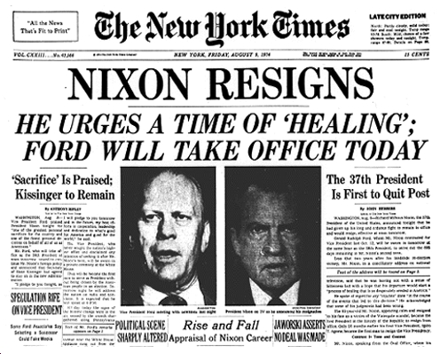
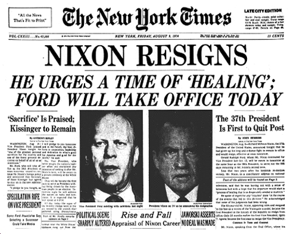

Toggle between the images below to search the rest of the website about the subject of privacy...



Mr Robot is an 2015 America psychological television drama series created by Sam Esmail. Since its initial release on the channel USA on the 27th May 2015, it has received acclaim across the board and even won a SXSW Film Festival award. It is as a result of this why the show has been renewed for a second season in 2016.
The story focusses around a young man from New York who works as a cyber-security engineer by day and is a vigilante hacker by night. His name is Elliot Alderson (played by Rami Malek). As the story goes on, Elliot stumbles across a mysterious man known as "Mr. Robot"(played by Christian Slater) who ends up taking Elliot on as one of his hackers to be part of o a team of hackers called "fsociety". Riddled with a social anxiety disorder and stuggles to connect with people if it isnt through hacking, Elliot is confused as to whether to join and be part of the group as the show follows Mr Robots Mr. Robot's attempts to engage Elliot in his mission to destroy the corporation Elliot is paid to protect. Compelled by his personal beliefs, Elliot struggles to resist the chance to take down the multinational CEOs that are running (and ruining) the world. (Ghosh, IMDB, 2015)
This show is receiving many high praises from critics stating that it is "one of the most accurate displays of hacking ever on television or in movies". Forbes magazine has even gone as far as to say that this 'rookie' drama is able to compete with the other bigger blockbuster films and television dramas (Tracy, 2015). It isn't just because the storyline is very intriguing and has us as the audience by the edge of our seats, but also because of the mastiful acting of Rami Malek. His portrayel of a hacker with social anxiety issues is very believable and captivting which is why many people, including myself would recommend watching this 10 part master piece created by Sam Esmail.